GCPUG Tokyo+Osakaで話す予定だった話
GCPUG Tokyo+Osakaで話す予定だった話
(注意：本エントリは2016年4月時点のものです。このあと、様々な改良がGCP・k8sに入り、このエントリの内容はほぼほぼ意味がなくなりました。あくまで歴史的な記録として参照してください）
うおー、初めてのGCPUGだー！話すぜ−！と勢い込んでいたら家庭内パンデミックに巻き込まれ（次男→妻→自分）当日に38℃超の熱をマークしてしまったので泣く泣く登壇をキャンセルしました。
その代わりと言ってはなんですが、ブログで話す予定だったことを逐一全て書こうと思います。エンベッドできるスライドは以下に、その下には僕が話す予定だったことを可能な限り全て書いたスライドごとの解説があります。
Enjoy!
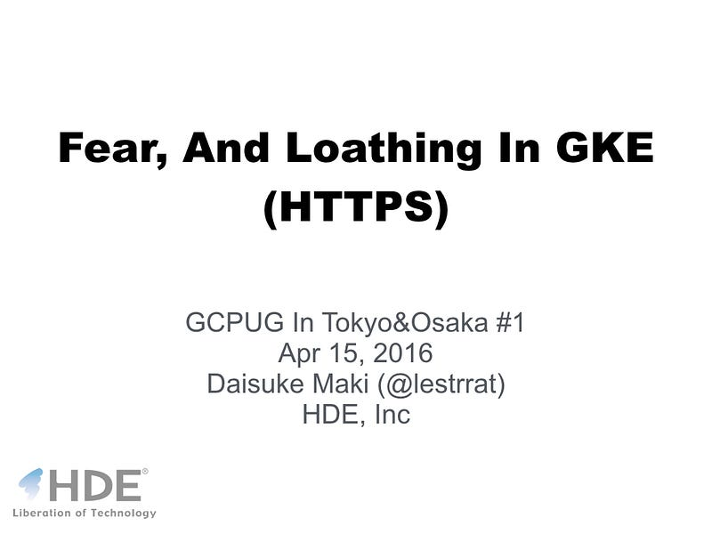
HDE Incの牧と申します。最近はjwa/jws/jwe/jwt/jwkやらJSON Schemaやら色々書いています。
本日は私が最近経験した、Google Cloud Platform(GCP)でGKEを使ったアプリケーションをHTTPS化するときに遭遇した様々な事柄をお話したいと思います。
ちなみに皆様GKEって使ったことあります？GKEはGCP上でコンテナを使ったアプリケーションの運用を助けてくれるためのものですね。それではGKEのKはなんだか知ってますか？プロダクト名はGoogle “C”ontainer Engineなので頭文字だけ使うならGCEなんですが、これはGoogle Compute Engineと被るから没になったのでしょう。で、Kって何？
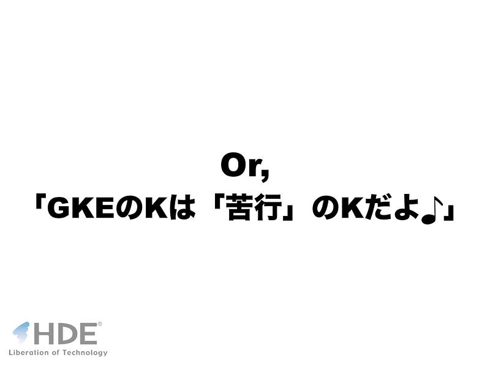
そうですね！”K”はKubernetesのKですね！
Kubernetesは今はDockerに買収されたfig等のなんちゃってオーケストレーションツールで散々涙をのんだ自分が「あ、これなら使ってもいいや。っていうかすげぇ楽！」と思わせてくれたイケてるコンテナオーケストレーションフレームワークです。
… ということで 僕の苦行の話を聞いて下さい。
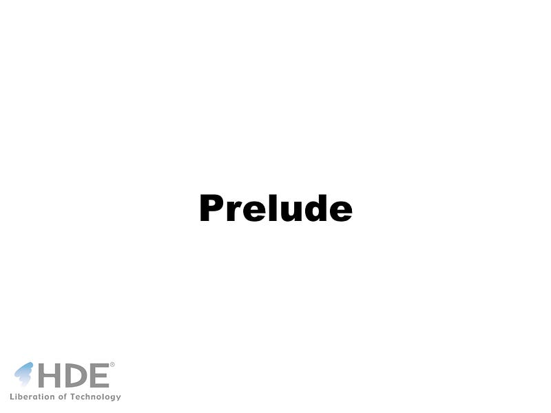
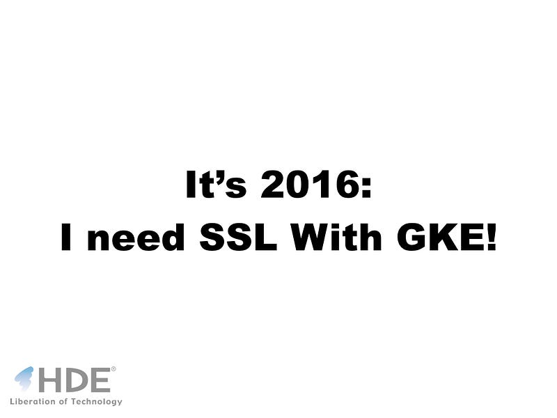
もう2016年になって、これから作るサービスでHTTPS使わないとかない、みたいな雰囲気になっているので、GKEで作ってるサービスにも当然SSLをつけたいと思いました。といってもこちらはGCPに関してはまだまだ素人に毛の生えたようなもの。まずはHTTP ロードバランサを設定するところから調べ始めます。
まずはKubernetes抜きでやるとどうなるのか：
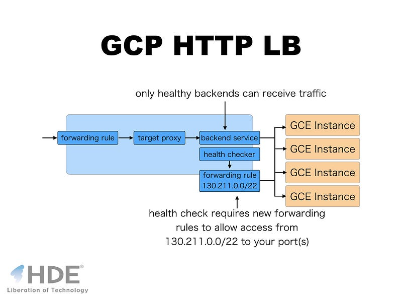
AWSだとELBをバツン、で終了なイメージがありましたけど、GCPのLBは色々と名前がでてきます。今回の話の中で重要なのはtarget proxyとbackend serviceです。大雑把に言うとtarget proxyは皆さん大好きなreverse proxyの部分で、backend serviceというのが、裏で何台かにまたがっているGCEのVMインスタンスをまとめたものです。
バックエンドは複数登録することができ、ヘルスチェックされた結果が正常なバックエンドのみにトラフィックが流れます。ヘルスチェッカーからのバックエンドへのアクセスについてはポート80/443に限ってはVM起動時にGCPがよしなにしてくれますが、それ以外はフォワードルールで”Google HC”さんを許可してあげる必要があります。
というのが、通常のGCEでのロードバランスする際の概要です。
さて、ではGKEではどうでしょう。
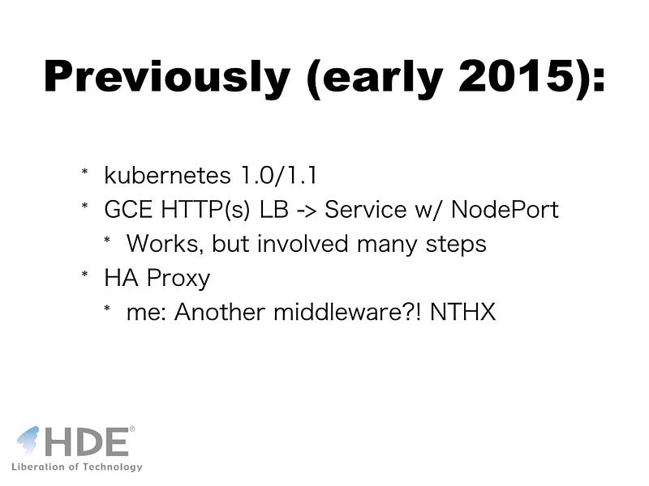
さて、一番最初にGKEでHTTPロードバランスをやってみたのは去年の話でした。その頃はKubernetesのバージョンは1.0とか1.1だった記憶があります。GKEではコンテナはPodという論理的なグルーピングに内包されていて、そこへ外からアクセスする方法を作った上で生のGCEを使ったロードバランシングと同じ事をする形になります。この作業はシンプルと言えばシンプルですが結構面倒くさいです。
もう一つの方法はHA Proxyのようなものを突っ込んで自分でロードバランシングすることなのですが、ここで新しいミドルウェアを覚える気はあまりありませんでした。
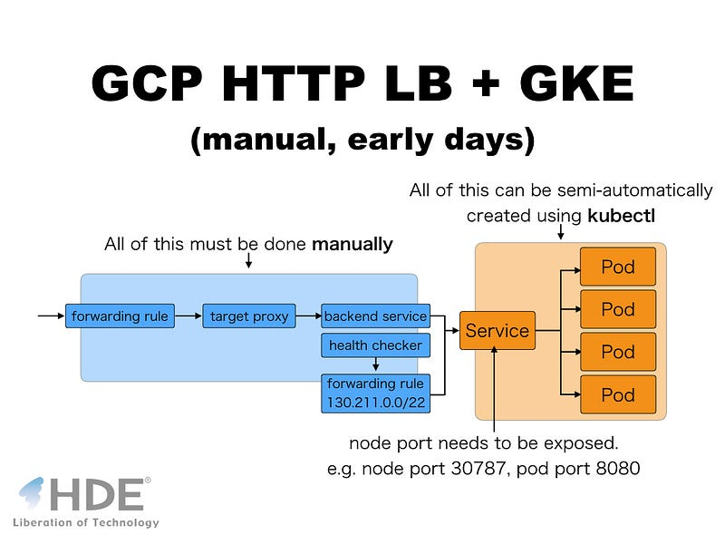
図にするとこんな感じです。生のGCEの場合はbackend serviceがまとめていてくれたアクセスをKubernetesの中の概念であるserviceでまとめた上、中のポート（例：8080）を外のポート（例：30787）にマッピングしてアクセス可能にする、ということをする必要があります。Health checkerもbackendもその外のポートに対してアクセスを行います。
まぁ無理じゃないですが、やっぱり面倒くさい。
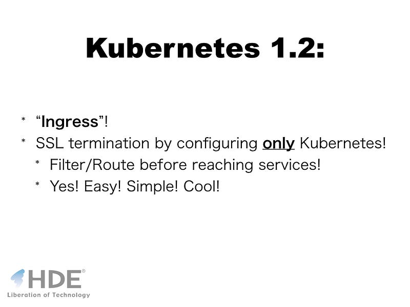
ところが Kubernetes 1.2になると、Ingressというリソースが登場します。これはKubernetes側でロードバランサー部分の設定を記述できるというものです。設定はKubernetes側にありますが、それをどうやって実現するかは実行環境依存で、GCPであれば基本GCPのHTTP Load Balancerを使います。あるのかどうか調べてないですが、理論的にはAWSだろうとAzureだろうとKubernetes側が対応してれば同じようにできるはずです。
しかも設定すればSSL terminationもその部分でやってくれる！最高ですね！しかもGKEにKubernetes 1.2来てた！使いましょう！
まずこれまで通り通常のHTTPロードバランサーをIngressで実装するとどうなるのか：
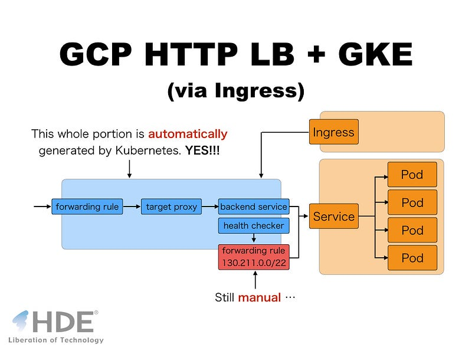
この図にある青い部分は、右上のIngressを設定するだけで全て自動的に作成されます。やった！残念なのはヘルスチェッカーのforwarding ruleだけまだマニュアル対応しないといういけてない部分…
でもこれならもうほとんどできたも同然ですね！じゃあ次はSSLだ！
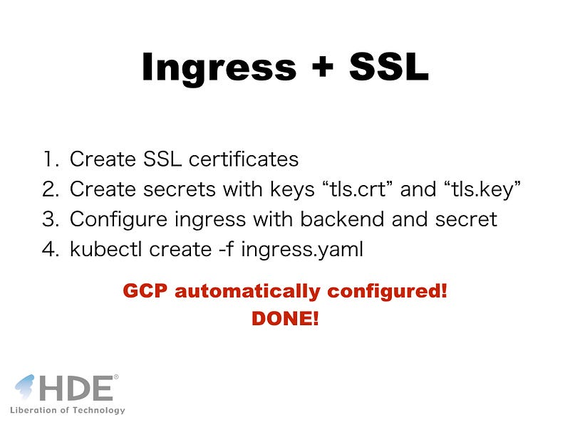
IngressでSSL設定するためには、tls.crtとtls.keyという二つの値を持ったSecretを作成し、それをIngressリソースに紐付けるだけです。この設定を使ってIngressを作れば、GCPのロードバランサーも自動的に設定してくれます！すげー！
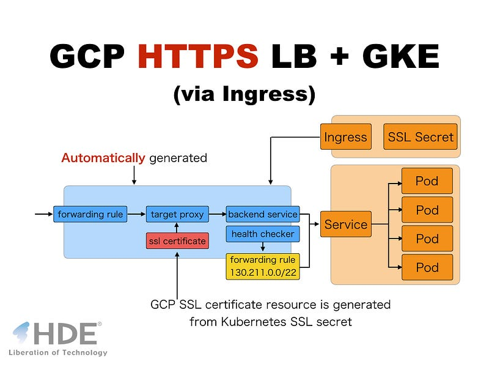
こんな感じでキレイにできます。やった！第一部完！
でも、僕はもういい年をしたITおじさんの部類なのでそこで気づいてしまうんですね、「あれ？これ証明書を変更する時とかどうなるの？」
証明書の変更自体は色んな方法でできるはずだけど、それについて語ってるドキュメントは一切見つからないわけです。Kubernetesを使ってるとたいがいの事はkubectlコマンドを使うとどうにかなるので今回もそうなるといいなーと思ってました。
で、ingress.yamlを変更して kubectl apply -f ingress.yamlするじゃろ？
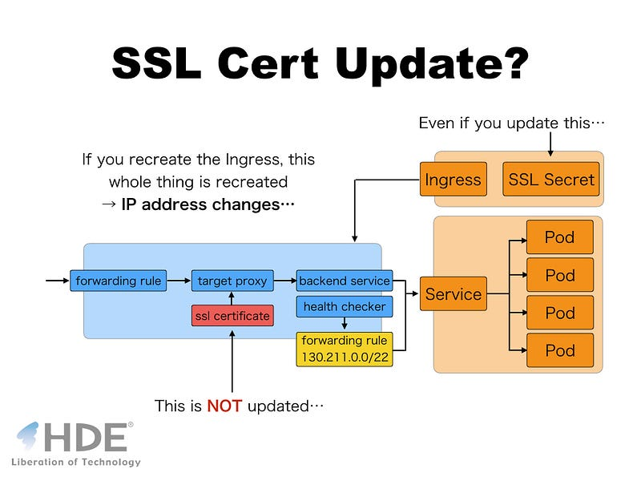
あれ… Kubernetes上のSSL Secretは変更されてるのが確認できるんだけど、GCPロードバランサー上のSSL証明書は変更されない… 何回もやってみたけどされない…
最終的に（結果は知ってたけど）、もうこれはIngressをkubectl delete ingress / kubectl create ingressするしかないな！と思ってやってみました。それをやればもちろん証明書も更新されるんですが、HTTPロードバランサー自体が新しく作られるので、IPアドレスも変わるんですね。まぁこれはあたりまえ…
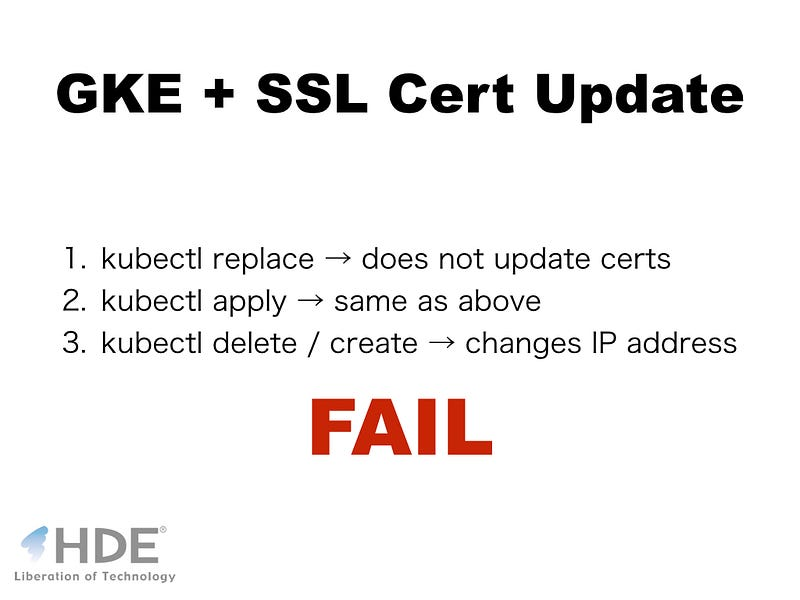
ということで色々やってみましたが、どうもうまい結果を得られない。
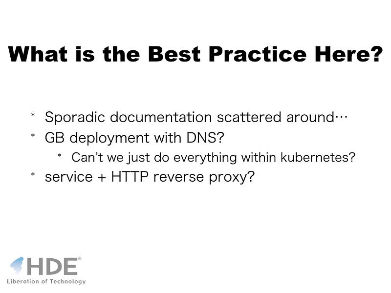
前にも書いたように僕ももういい加減色々なところで色々な問題を見てきて、これはGCPのロードバランサーの管理を自分でやるしかないのでは、という事をうすうす感じてはいました。でもドキュメントも特に無いし、ひょっとしたらなんかうまい方法がまだあるんじゃないか？という気持ちを抑えられなかったので…
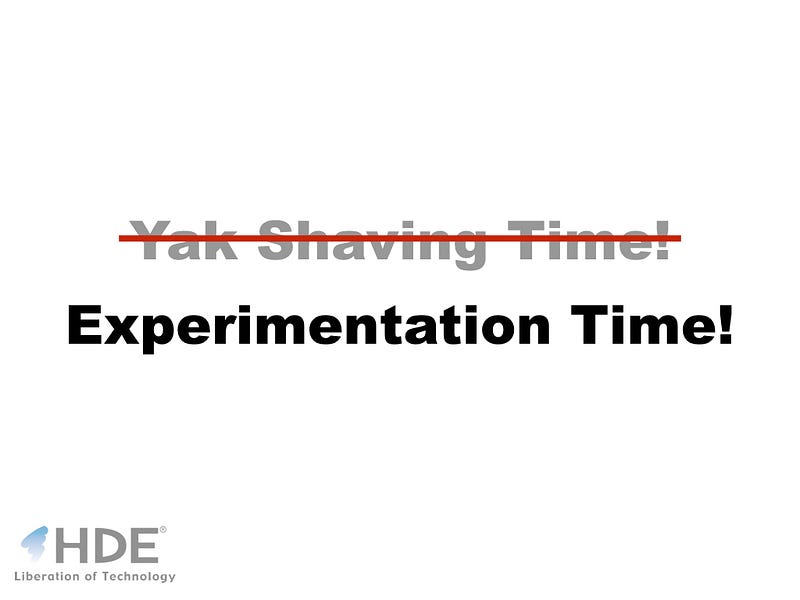
…色々実験をしてみることにしました！
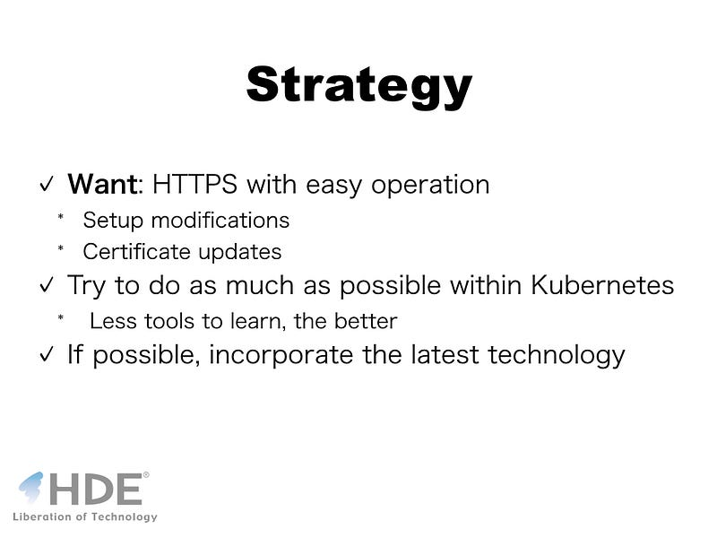
とりあえず実験で得たい結果は、安全かつ簡単にHTTPSロードバランサーを設定・運用する方法です。条件としては、なるたけKubernetes内で完結したい。そのほうが僕以外の人が面倒を見るときに覚えなければいけない事が減ります。あとおまけの条件としては、可能ならば最新の技術をぶちこんでみたい。それだけです
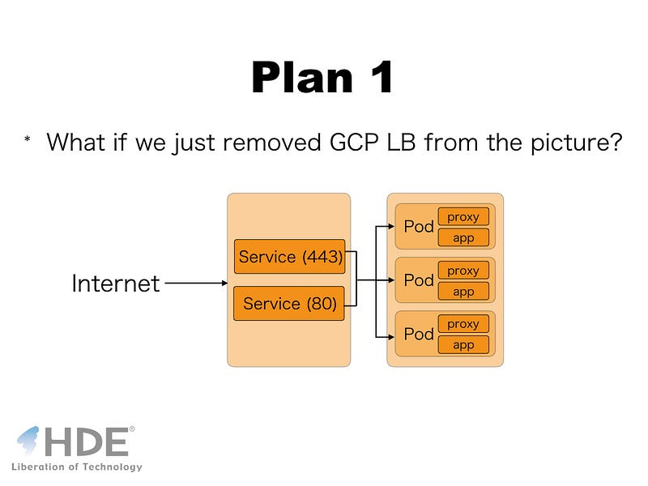
まず案１です。Kubernetesのサービスはそれ単体ですでにロードバランスおよび外部へのIPアドレスの露出をしてくれます。GCEのロードバランサーをそもそもとっぱらっちゃったらどうなるんでしょうね？
その場合は、SSL termination用になんらかのプロキシHTTP(s)サーバーを立ち上げます。ちなみにドキュメントをあさっているとnginx ingress controllerというのもあるみたいだし、期待していました。
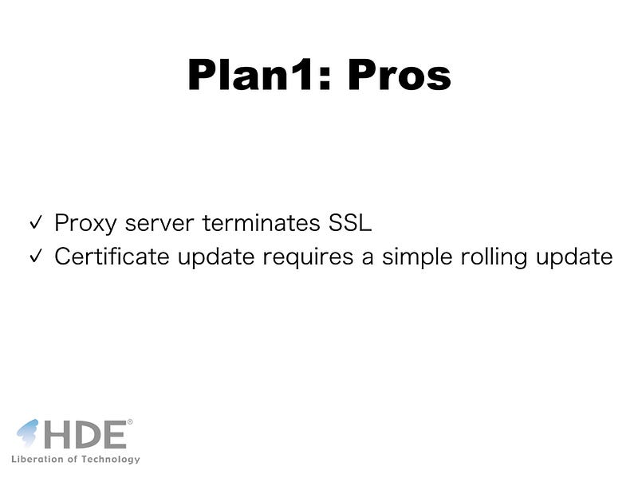
この案の良い点としては、コンテナのプロキシがSSLを処理してくれるし、証明書の更新はkubectl rolling-updateとかkubectl deploymentとかの更新でできるということです。なんか良いことばかりでオラ、わくわくしてきたぞ！
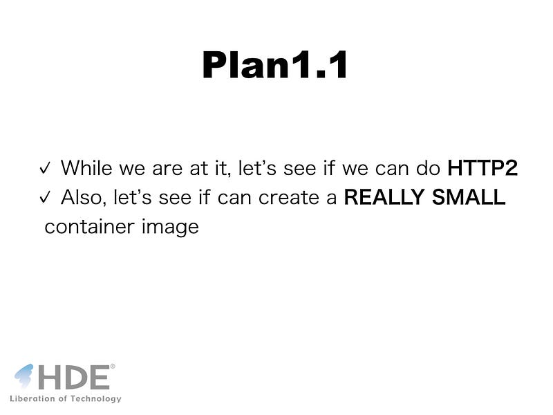
ついでに二つのことにも挑戦します。どうせならHTTP2してみよう！ということと、コンテナのイメージも可能な限り小さくしてみよう！という2点です。これを案1.1とします。
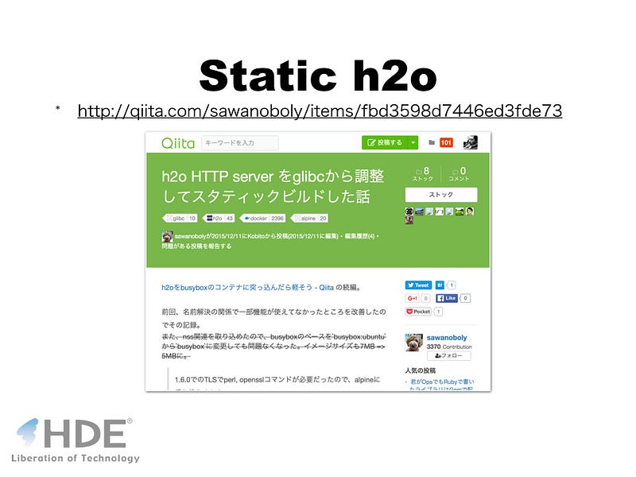
ありがたいことにh2oのスタティックビルドは他の方がすでに挑戦されてました。ほぼここのレシピを使って、alpine+h2oのイメージを作ると…
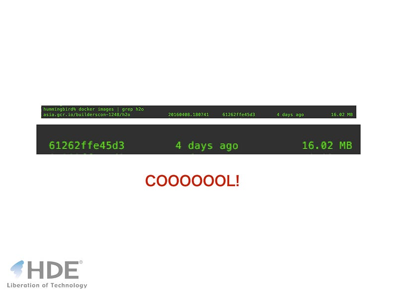
うおおおおお、16MBしかないじゃん！超カッコいい！
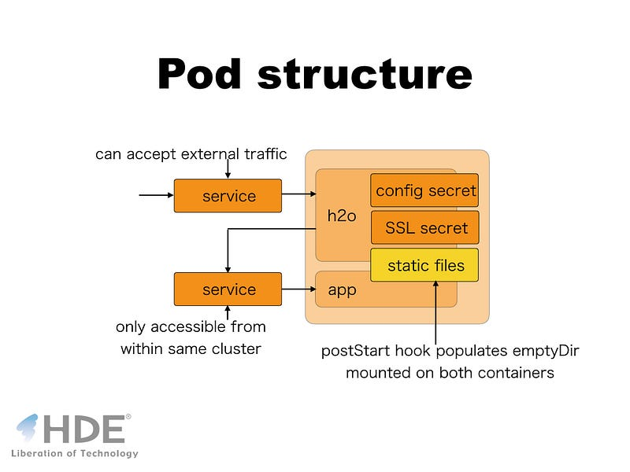
これを使ったPodの構成はこんな感じです。上のほうのserviceは外へポート80/443を露出していて、h2oにトラフィックを流します。h2oからappへのトラフィックは内部のみで扱えるアドレスに流します。
アプリケーション用の静的ファイル（JSとかCSSとか）はapp側が持っていますが、Podの性質上同一Pod内のコンテナは必ず同じVMで起動するので、postStartフックを使って静的ファイルだけを双方からマウントしているemptyDirにコピーして利用できるようにします。これによって、appコンテナを更新するだけで、h2oが配信する静的ファイルも更新されます。
SSLはもちろんh2oに処理してもらうので、ingressの時と同じような感じでSecretを設定してマウントします。
さて、これをデプロイすると…
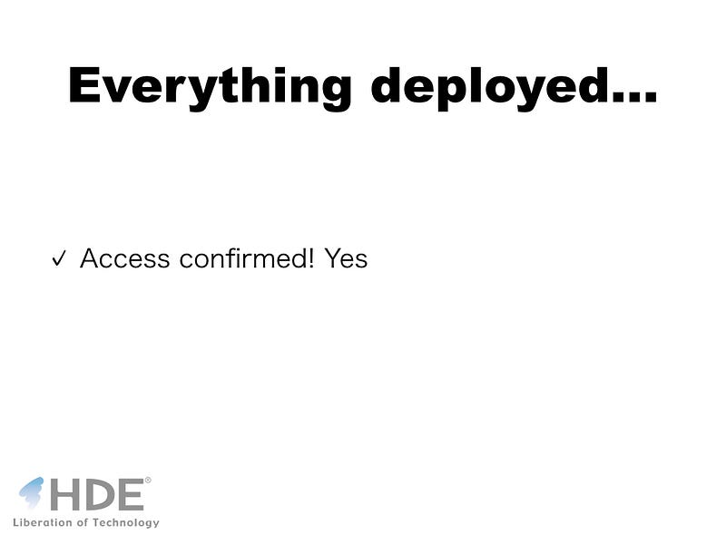
うおおお、ちゃんとアクセス来た！すげー！
と、おもいきや、何回かロードを繰り返してると何かがおかしいことに気づきます
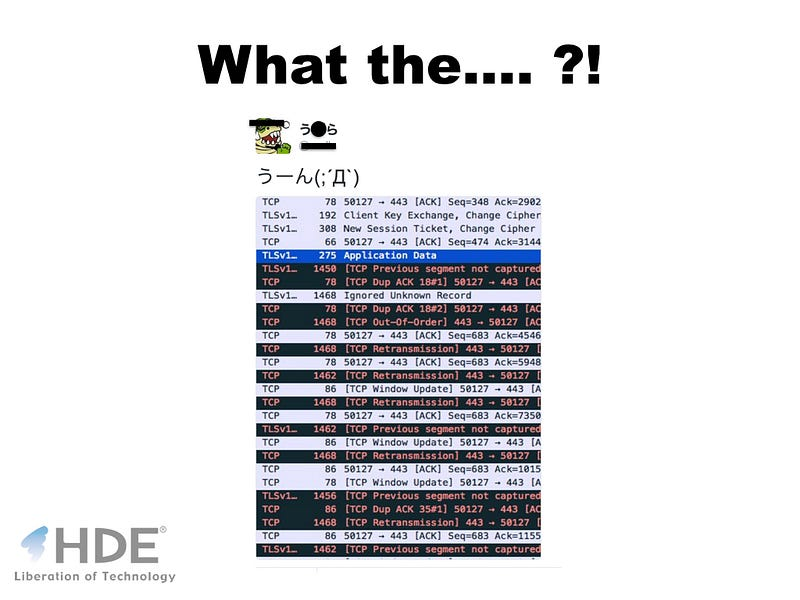
心優しい方が調べてくれたところ、なんだかTCPレベルで重複パケットが飛んでる…？ え、いやだ、なにコレ…
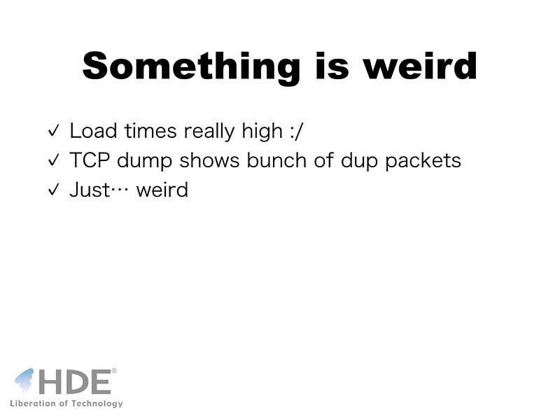
というわけで、ロード自体はできるのですが、なにか… 重い。TCPレベルでなにかおかしい事が起こってるみたいだけど、とにかく2016年にTCPレベルの解析は… いや、とりあえず今はしたくない。
とりあえず実験なので、パラメターを何か変えてみてどう変わるか観察してみることに：
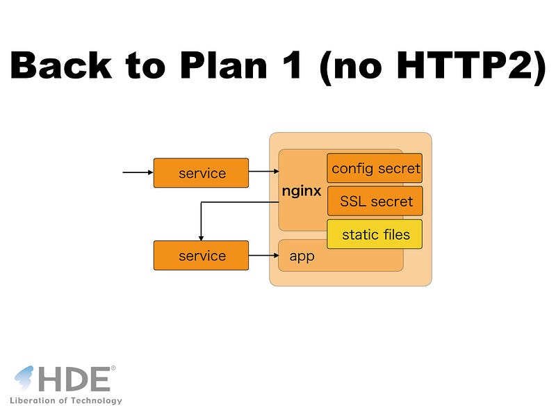
というわけで案1.1は破棄し、案1に戻ってnginxだけにしてみます。GCPのロードバランサーがHTTP2に対応してないなんて思いたくもないけど、ありえない話じゃないし… それに俺達のnginx先輩だったらきっとやってくれる！h2oは俺達の中でも最弱（ｒｙ
ちなみにnginxはnginx:alpineイメージを使いました。クラウド上にあがっているイメージ使うのが良いかどうかはとりあえずお忘れ下さい…
あれ、駄目だ… なんでや…
なんと、案1.1の時と同じ事が起こります。どうものろい。そしてなんかTCPレベルでエラーが… どういうこっちゃあ！なんかアプリレベルの問題には見えないんだよな…
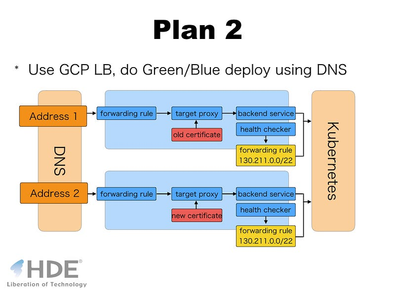
もうしょうがない。こうなったら完全撤退です。DNSを使って、ingressを二つたてつつ、片方へのアクセスがなくなるまで生かしておき、良きところで古いものを削除する方法を試します。
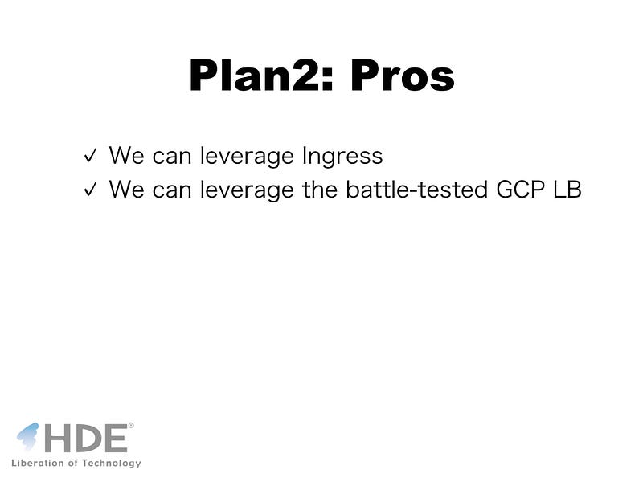
この案はもちろんIngressリソースそのものを使える事と、GCPのLBという確実にKubernetesより長く辛い戦いを戦い抜いているツールを使えることが最大の利点です。
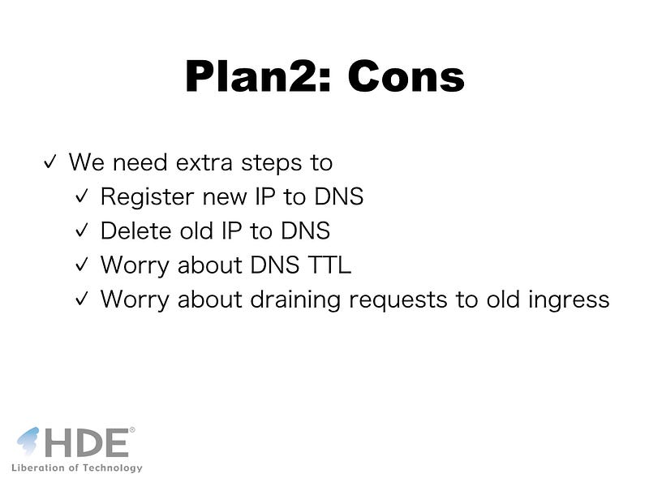
ただし、Ingressだけでは完結しないので、自分でこういういくつかの事を手動で処理するか、自動化するための仕組みを用意しないと切り替えができません。面倒くさいよー！
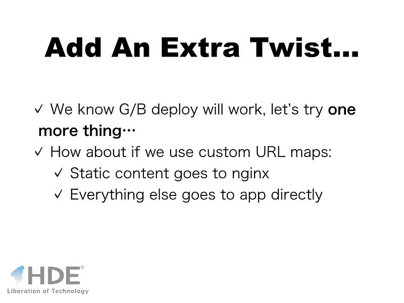
Green/Blueデプロイは確実にうごくでしょう。なのでついでにもう一つ追加要素をぶっこんでみました。Ingressに（もちろんGCP LBにも）実装されているURL Map機能を使って、静的コンテンツ（/static）はnginxへ、それ以外はアプリへ行くようにしてみます。
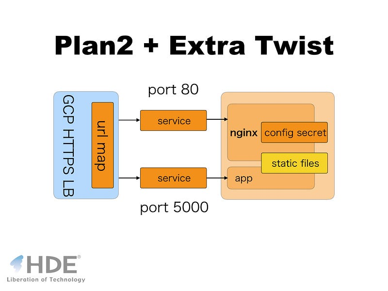
こんな感じです。SSLはGCP側ですでに処理済みなので、nginxにはもうSSL Secretはありません。
Serviceが二つあり、それぞれがポートごとにアクセスをふりわけます。いやー、これで絶対動くっしょ！
あれ… なんかうまく動かない…
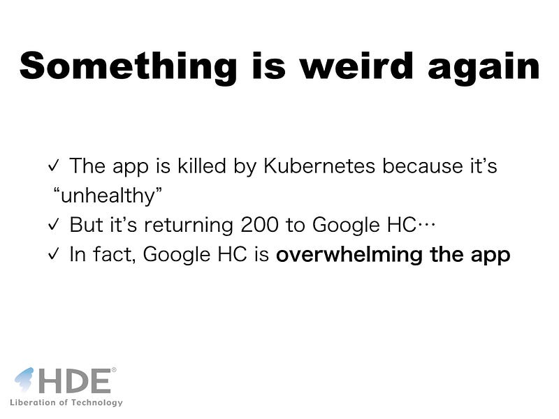
これまでとは違い、なんだかうまくルーティングがされない感じです。ざっと見てみるとデフォルトバックエンドとそれ以外が出来てて、そのあたりでうまくいかなかったのかな…？
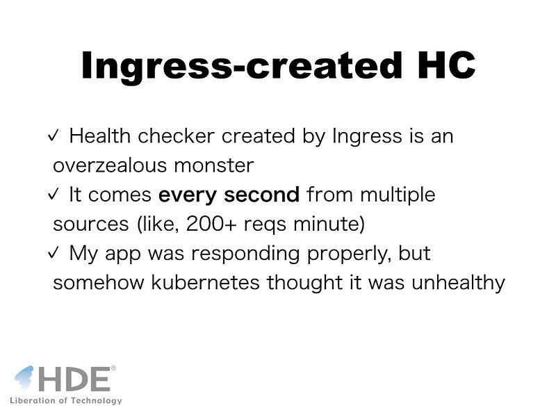
ともかくよくわからない理由で設定フィールドには余計なバックエンドができてるように見えるし、アプリ側にはたいした量のトラフィックは行ってないのにunhealthyと判断されて殺され続けるハメに…
本当はもう少し深く調べたかったのですが、今日のトークの日が迫ってたのでこれに関してはこれ以上ちゃんと確かめることはしませんでした。なのでこれは僕の設定ミスの可能性もかなりあります。
ともかく時間切れです。
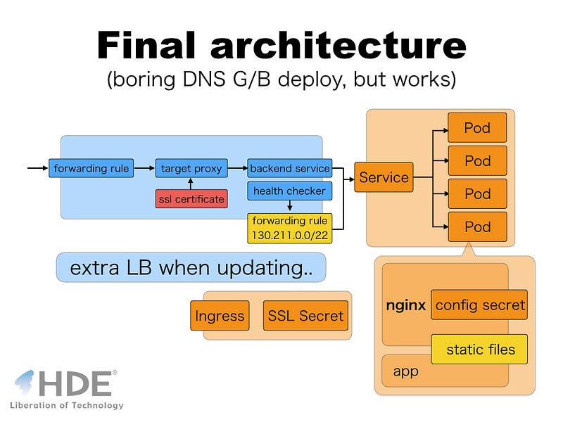
というわけで最終的な構成はこうなりました。Pod側ではnginxが一旦すべてのアクセスを受け、動的部分をappに流します。証明書の更新はDNS操作によるBlue/Green Deployで更新することにしました。
この辺りは次のKubernetesのリリースでどうなるのか注視していきたいと思います。
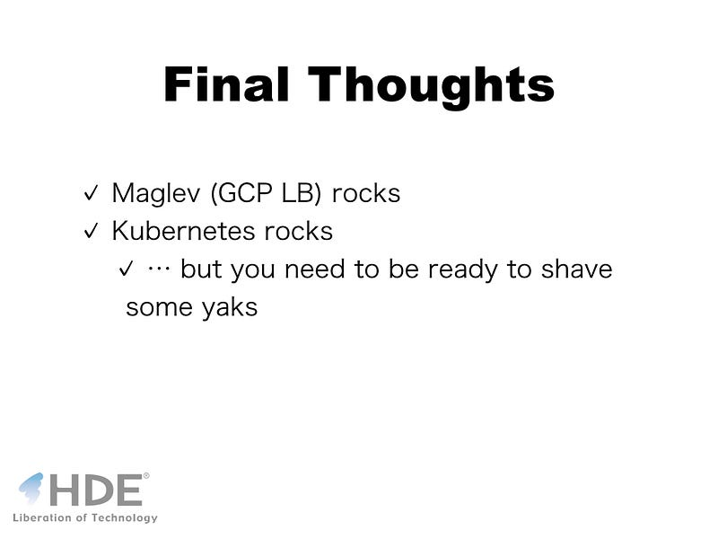
最後に感想としては、やっぱりGCPのロードバランサー（Maglev…ですよね？）はすごいなー、と。あとKubernetesもやっぱりすごいんだけど、とにかく自分で全ての落とし穴に一回はまるつもりでやらないといけませんね、という事でした。
皆さんには僕の人柱経験を踏まえて、ハッピーなGKEライフを送って下さることをお祈りしています！